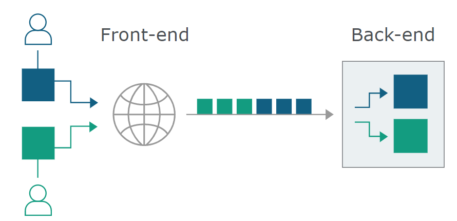
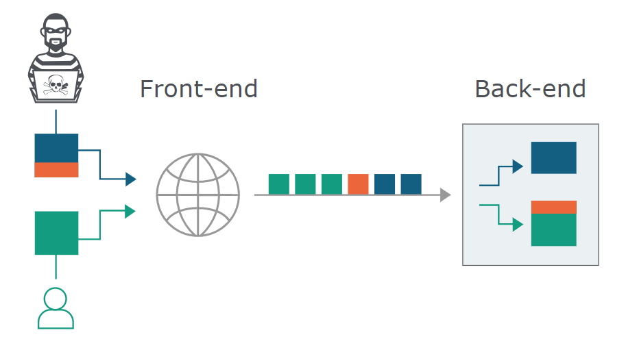

HTTP请求走私简述
# HTTP 请求走私是什么
HTTP 请求走私，一种干扰网站处理来自用户的 HTTP 请求序列 的技术
# 相关知识点
该漏洞的产生主要和 HTTP 请求中的两个头相关：
Transfer_Encoding & Content-Length
# Transfer-Encoding
Transfer-Encoding 通用标头字段指示已对消息正文应用了什么（如果有）类型的转换，以便在发送方和接收方之间安全地传输它，在 HTTP1.1 中可用
利用该漏洞，需指定参数为 chunked Transfer-Encoding: chunked ，表示数据以一系列块发送，而不是等到完整的段可用
在 CTE 中，每个块前面都有它的大小（字节为单位）
当接收到零长度块时（不可省略），传输结束
✋🌰
1 | HTTP/1.1 200 OK |
第一部分： 当前组块长度（16 进制）+ \r\n
第二部分： 块内容 + \r\n
（例如 Media 就是 5 个字节长度）
倒数第二部分： 终止块 -> 分块编码以任何大小为零的块结束，长度为 0 -> 0\r\n
最后一部分： 以空行终止（\r\n）
# Content-Length
该字段指示发送给接受者的实体主体的大小，以十进制的 OCTET 数表示
这个可以自己用 burp 发包试试哦，bp 的 repeat 选项中默认开启了 Update Content-Length 选项
# ⭐注意 Connection
每当传输编码应用于消息体时，传输编码集必须包括 “分块”，除非消息因关闭连接而终止
也就是说，当连接关闭时，也会导致消息终止
那么我们在发送数据包时，就需要注意 Connection 头
Connection: keep-alive -> 表示客户端希望保持连接打开，拥有持久连接是 HTTP/1.1 请求的默认设置
Connection: close -> 表示客户端或服务器想要关闭连接，这是 HTTP/1.0 请求的默认设置
# HTTP 请求走私的原理
现很多应用程序使用 HTTP 服务链（2 个或多个服务器）
其中前端服务器有时称为负载均衡器或反向代理

这时，若前端后端系统就请求之间的边界没有达成一致，就可以发送一个模棱两可的请求，让前端和后端系统对该请求进行不同的解释

👇👇👇
由于 HTTP 规范提供了两种方法指定消息长度（Content-Length&Transform-Encoding），所以单个消息同时使用两种方法时，不同的服务器可能出现不同的解释
如果消息头以某种方式模糊了，则可以诱导消息头不处理它
👆👆👆
# HTTP 请求走私利用
请求走私大致分为 3️⃣种类型
- CL.ET -> 前端服务器使用 Content-Length，后端服务器使用 Transfer-Encoding
- TE.CL -> 前端服务器使用 Transfer-Encoding，后端服务器使用 Content-Length
- TE.TE -> 前后端均使用 Transfer-Encoding，但其中一个服务器可被某种方式诱导不处理该头部字段
# 实验环境
但是不知道为什么我一直没办法注册 portswigger，只能分析一下给出的例子了
# CL.ET
攻击数据包
1 | POST / HTTP/1.1 |
数据同时使用两种方法指定消息长度
🎀前服务器处理 Content-Length 头，认为请求主体为 13 字节，刚好至 smuggled 末尾，再将消息转发至后端服务器
🎀后服务器处理 Transfer-Encoding 头，由上述 Transfer-Encoding 知识点可知，这是一个终止块，那么接下来的 smuggled 不会被处理，后端服务器会将 smuggled 拼接至下一个请求的开始
# TE.CL
类似 CL.TE
1 | POST / HTTP/1.1 |
（⭐burp 上方 repeater 选项取消 Update Content-Length，这个选项会根据实体长度自动更新 Content-Length 头）
🎀前服务器处理 Transfer-Encoding 头，第一块 8 个字节，第二块为终止块，请求终止，请求转发至后端服务器
🎀后服务器处理 Content-Length 头，实体长度为 3，那么从 S 开始的内容，都将被视为序列中下一个请求的开始
# TE.TE
混淆 Transfer-Encoding 头的方式很多，例如
- Transfer-Encoding: xchunked
- Transfer-Encoding : chunked
- Transfer-Encoding: chunked
Transfer-Encoding: x - Transfer-Encoding:[tab]chunked
- [space]Transfer-Encoding: chunked
- X: X[\n]Transfer-Encoding: chunked
-
- Transfer-Encoding
- chunked
# 检测 HTTP 请求走私
实时站点，流量较大，可能将我们的 payload 拼接至别的用户数据包中
以下列出一种几乎没有影响其他用户风险的检测手段
1 | POST /smuggled HTTP/1.1 |
# CL.ET
前端检测实体长度为 4 个字节，Q 不会被转发，后端没有接受到终止块，会一直等待至超时，此时会有明显的延迟效果
# CL.CL
会被两个系统无害处理
# TE.CL&TE.TE
由于无效的大小块 Q，前端将拒绝该消息，不会将其转发至后端
那么怎么区分以上两个呢，且看下面这个数据包
1 | POST /smuggled HTTP/1.1 |
为 TE.CL 模式时，前端接收终止块，转发 X（不包括 X）以前的内容至后端服务器，共 7 个字节。后端服务器处理 Content-Length 头，认为实体为 9 个字节（>7），此时也会出现明显延迟
为 TE.TE 时，正确的终止块格式，会被系统无害处理
⭐burp 商店中也可以找到 HTTP Request Smuggler 模块，可以 scan 出来后，右键 Smuggle attack
⭐工具：https://github.com/defparam/smuggler
# 修复 HTTP 请求走私
# 我 不 理 解
在前端服务器通过同一网络连接将多个请求转发到后端服务器的情况下，会出现 HTTP 请求走私漏洞，并且后端连接所使用的协议有可能会造成边界不统一的风险。防止 HTTP 请求走私漏洞的一些通用方法如下：
1. 禁用后端连接的重用，以便每个后端请求通过单独的网络连接发送。
2. 使用 HTTP / 2 进行后端连接，因为此协议可防止对请求之间的边界产生歧义。
3. 前端服务器和后端服务器使用完全相同的 Web 服务器软件，以便它们就请求之间的界限达成一致。